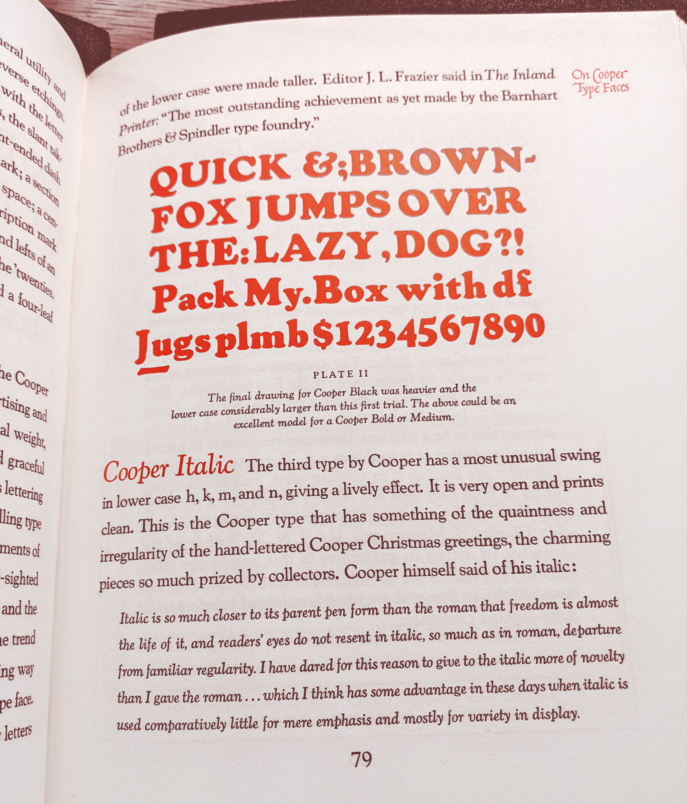

⚘ About
You’re already familiar with the font Cooper Black, even if you don’t know it by name. It’s so ubiquitous that any attempt to describe its ubiquity inevitably falls short. Multi-million dollar companies and mom-and-pop shops use it for their logo. It’s on T-shirts and album covers and the food packaging in your cupboard. It’s in movie and TV show title sequences, and on protest signs, book covers, and bumper stickers. Anywhere there’s a need for people to express themselves with typography, Cooper Black can be found.
But when Cooper Black was first designed over a hundred years ago, it was part of a typographic family. Cooper Black, as the name implies, is very bold, but Oswald Cooper, its designer, created a regular, non-bold version as well. Despite Cooper Black’s overwhelming popularity, I have yet to see a single instance of its non-bold counterpart being used in the wild. Most people don’t know such a font ever existed.
Which is a pity, because as stylish as Cooper Black is, its lightweight sibling is uniquely beautiful. It has an organic Art Nouveau feel to it. Straight lines bow inward like the trunk of a tree, acenders curve backwards and forwards like the delicate stems of flowers. There is hardly a straight line or a sharp corner to be found. It does all this while still managing to be legible at text sizes, making it suitable for laying out a book or other passages of text.
I suspect part of the reason nobody uses the lighter weighted versions of Cooper’s letters is because, up until now, there has never been a historically accurate Cooper family released for the computer. In fact, to my knowledge, there has only ever been one font foundry to ever release a digital version of Cooper’s original regular-weighted font, and it’s only available through their website, so it’s not something easily stumbled upon.
I am genuinely upset that Cooper’s work is in the process of being forgotten. The regular weight Cooper is every bit as gorgeous as Cooper Black, and the italic is truly phenomenal. I feel a sense of responsibility to do Oswald Cooper justice as it seems no one else will, and so Cooper* is a meticulously researched, historically accurate revival. I can confidently say that this is the best, most complete and most historically accurate Cooper font family ever released for the computer. I hope you will cherish these beautiful letters as much as I do.
⚘ Design
Cooper* is at its core a revival. It is an attempt to translate as accurately as possible Cooper's original analogue letterforms to the digital medium. A variety of sources were consulted including the 1923 Barnhart Brothers & Spindler catalog, the 1934 American Type Founders catalog, and the 1949 Book of Oz Cooper. These were used both for historical information about Oswald Cooper and his design process, but also as a reference for his letterforms.

This is a section of a page from the 1934 American Type Founders catalog
This is Cooper*
There are some special characters and symbols that Oswald Cooper never designed, such as the pound sign (£) and the number sign (#). These were either drawn from scratch to cohere with the existing letters, or based on designs from the same era.

The left is a section of a page from the 1923 Barnhart Brothers & Spindler catalog. The pound symbol was sold separately and was not designed by Mr. Cooper, but it would have commonly appeared alongside Cooper’s designs.
⚘ Features
A true font family
Cooper* is the first ever historically accurate Cooper revival to feature a complete range of weights starting with the expressive Regular
and ending with the iconic Black.
The design’s Art Nouveau roots really come through in the lighter weights which are constructed of organic, flowing, sometimes delicate lines. Cooper manages to balance this personality and expressivity with legibility, meaning the regular weight is perfect for books or long passages of text (like the one you’re reading now!)
Cooper Black’s italic is respectable and beautiful in its own right, but when I first saw Cooper’s original light-weight italic I was blown away by how much personality it has. In the words of Oz Cooper himself:
Italic is so much closer to its parent pen form than the roman that freedom is almost the life of it [...] I have dared for this reason to give to the italic more of novelty than I have the roman.
Cooper* of course comes with the daring
italic in all six weights.
An expansive character set
Cooper* supports over 50 languages and includes special characters such as mathematical symbols making it practical and versatile.
Cooper* also includes some ornamental characters designed by Oz Cooper himself, perfect for adding that old-timey touch to book or text layouts.
Fancy features
Cooper* makes full use of modern font features and includes ligatures, a variable font version, and capital swash alternatives that are based on historical designs.
Free and constantly improving
As with all indestructible type* releases, Cooper* is free and open-source, meaning you can download it now and test it out. You can always pay what you think its worth later. I will continue to improve and enhance it into the future.
⚘ A long rant about historically inaccurate Cooper revivals...
First and foremost, I would like to give my flowers to the Japanese type foundry Wordshape. Their regular-weighted Cooper revival is well researched, and clearly done with a lot of respect to Oz Cooper and his legacy. Their typeface Cooper Text shares many similarities with Cooper*, however Cooper Text includes ornamental initials (which my font does not). These ornamental capitals are beautiful and based on Oz Cooper’s designs. Currently Wordshape is the only place in the world they can be found. Their font is well worth the $25 price tag and makes a nice companion font to Cooper*. Wordshape does not currently offer a complete Cooper family, so Cooper* still marks a significant first in terms of Cooper revivals, but I would be remiss if I didn’t mention Wordshape as they are the first to do a historically accurate, regularly weighted Cooper. Please check out their foundry.
❧
You may notice while reading this webpage that I often use the phrase historically accurate
to qualify this Cooper revival. I do not claim (for example) that Cooper* is the first ever Cooper revival to offer a complete range of weights, rather I claim that it’s the first historically accurate revival to do so. I am not just being overly wordy for the sake of it, I am being precise. There are, in fact, several Cooper revivals to offer a complete range of weights. They are just comically lacking in any regard for historical accuracy.
If you search for Cooper
on a font marketplace such as MyFonts, it will return several Cooper font families with a range of weights, such as Bitstream’s Cooper BT or URW Type Foundry’s Cooper Old Style. The lighter weight versions of these typefaces share little resemblance to Oswald Cooper’s original designs.

This is the original Cooper
Click and drag the knob below to cycle through Cooper revivals. This is my font: Cooper*
This is URW Type Foundry’s Cooper Old Style

This is Bitstream’s Cooper BT. This same font is also offered by Paratype.
This is Paratype’s Cooper BT
I can only speculate as to what’s going on here and why these fonts look the way they do. To my eyes URW’s Cooper Old Style is the more historically accurate one. Most of its letters resemble the original, although there’s a certain crudeness or roughness to them, as if they have been photocopied several times and lost some of their clarity in the process. Thin lines have become thicker, and some of the details have been rounded off. Bizarrely some letters are completely inaccurate. The lowercase g
for example looks nothing like the original, nor does the 3.
To give URW Type Foundry the benefit of the doubt here, I’m guessing that whatever they were using as a reference when making this font was incomplete and of poor quality. Their reference probably didn’t include a lowercase g
so they guessed what it might have looked like based off of the italic. Maybe their reference really was photocopied many times and the crudeness is not their fault.
If URW’s Cooper Old Style were released today there would be no excuse for this, as the University of Michigan has made a copy of the 1934 American Type Founders catalog available online for free, which includes a complete character set for Cooper, but maybe this font was made long ago before the internet was as expansive. In any case, it is neither a particularly accurate Cooper, nor is it a well-made font in my opinion.
Bitstream/Paratype’s Cooper BT shares little if any resemblance to the original Cooper. There is much less contrast between thick and thin lines, making it unsuitable for laying out passages of text. The curved, smiling serifs at the bottom of the r
or l
have been flattened into straight lines (or perhaps ovals). Ascending letters such as k
and l
are comparatively short. I could go on, but I’d be laboring the point. These are different typefaces, and much of the personality has been lost.
Which is not to say that I dislike Cooper BT. To me, the original Cooper evokes the time period from which is comes: the 1920s. Cooper BT on the other hand evokes the 60s and 70s, decades that famously saw a resurgence in popularity for Cooper Black. It is a well constructed font with a personality and identity of its own, and when used properly is pleasing and stylish.

New York Magazine’s Strategist looking pretty chic in Cooper BT
This version of the Breaking Bad logo I got from Wikipedia uses Cooper BT
There isn’t a ton of information online about Cooper BT, but what is available is instructive:
Bitstream Cooper was designed at Bitstream in 1986 by means of adding light, medium, and bold styles, with the corresponding italics, to the existing black ones.
In other words, the folks over at Bitstream were apparently unaware that a non-bold version of Cooper had already existed for over six decades when they made Cooper BT so instead of just going with Oz Cooper’s designs, they took it upon themselves to invent a light version of Cooper to match Cooper Black.
Throwing out half of a typefaces’s styles so you can reverse engineer what the tossed styles might look like is a interesting intellectual exercise, and in the case of Cooper BT it has yielded worthwhile results. However, I do feel Bitstream/Paratype have a responsibility to update their font’s descriptions to clarify that there was a historical non-bold version of Cooper which looks very different from the one they’re selling. Otherwise they are giving the false impression that no such font ever existed. It’s not 1986 anymore; this information is readily available.
And to be perfectly honest, I imagine this information wasn’t terribly difficult to come by in 1986. I managed to walk myself into a public library and look at a copy of The Book of Oz Cooper the old-fashioned way while researching this, and I have no money or institutional backing. In fact, I somehow managed to consult multiple physical books, books that existed in the 80s.
I’m frustrated by this whole situation, but neither the crudeness of URW’s revival, nor the apparent lack of research done by the Bitstream team bother me quite as much as Mr. Miles Newlyn.
❧
Miles Newlyn is a typographer out of London who’s worked with some of the biggest brands on earth. He’s done work with Cadillac, the Tate museum, and more recently, Burger King. In 2020 he decided to try his hand at a Cooper revival—or rather an improvement over the original, whose lighter weights have become dated.
Cooper’s bulbous, oval serifs had not been modernised. There has been very little professional reappraisal of Cooper as a font family, and even less in that elliptical serif style.
The emphasis (in both quotes) is mine. He describes Cooper’s serifs as oval or elliptical, but looking at the original Cooper, would you describe its serifs as ovals?

Just to be clear I’m talking about what’s inside the red ovals. I realize the irony in using ovals to highlight what I’m talking about.
I wouldn’t. They look like crescents or little smiles to me. In fact, it doesn’t really sound like he’s describing the original Cooper at all; it kind of sounds like he’s describing Cooper BT. He removes all doubt when he includes a photo on his website of the original
cooper:
This is from his website.
Those serifs do look a lot more like ovals, but that’s not the original Cooper: it’s an ahistorical fiction concocted by Bitstream in the 80s.
Bitstream has unknowingly set the perfect trap, and Newlyn has fallen right into it. Presumably he read somewhere, correctly, that Cooper Black originally had a lightweight counterpart, and, remembering this factoid, assumed, understandably, that Bitstream and Paratype had done their due-diligence and were selling something that in some way resembled the original Cooper and not just something they had invented out of whole cloth.
What’s particularly unfortunate is that Mr. Miles Newlyn goes on to criticize the original
Cooper, characterizing it as outdated, lacking in consistency, and unsuitable for laying out passages of text. All of which are problems his font solves, available now for $1,400 USD.
Which, of course Cooper is inconsistent, if you’re going off of Cooper BT. One part was made over half a century after the other by entirely different people using vastly different technologies.
Imagine if you had spent years of your life bringing a piece of art into this world, a book perhaps, and for some reason somebody tossed out the first half of the book, only to go on to claim that you never wrote a first half (despite a wealth of easily available documentary evidence that you had). That person then writes a worse version of the first half of the book, only for someone else to stumble upon this new version of the book, think you wrote it all, and criticize you for how bad the first half of the book is.
It’s disgraceful. It’s totally disrespectful to Oswald Cooper, his work, and his legacy. I don’t think his work looks outdated. I don’t think it looks inconsistent, and frankly, it’s far superior for laying out passages of text than Newlyn’s improved
version. There are good faith critiques one can raise about Cooper’s typeface, but the ones Newlyn raises on his website are based in factual inaccuracies.
Whatever patience I have for URW or Bitstream I do not have for Miles Newlyn. This kind of research would have been easy to do in 2020, when Newlyn made his font. The Wikipedia page for Cooper Black has had an accurate picture of the lighter weight Cooper in its gallery since 2017. Bitstream and Paratype don’t have the audacity to criticize Oswald Cooper’s work, and Cooper BT only costs $150 USD, almost a tenth of the price of Newlyn’s offering.
If I had spent over a thousand dollars on Newlyn’s font, only to glance at a Wikipedia article and realize he sold me that font using misinformation, I would feel cheated. It’s lazy, it’s sloppy, it’s disrespectful, and I’m embarrassed for what it says about type design as a profession. This man is doing work with multi-million dollar companies. I am literally struggling to afford groceries, but if this is the kind of attitude I need to get ahead in this profession than I don’t know if I want to be a font designer.
I hope that Mr. Miles Newlyn has made a very bone-headed mistake. I hope that he didn’t bother to check Wikipedia, or the description of the Cooper font he bought, or open a single book while researching his Cooper revival, because if he had, and published his blog post containing false information anyway, then he would be knowingly lying, and knowingly slandering the name of Oswald Cooper. That would be disgusting to me, and I’d rather believe that he is a lazy hack who hasn’t bothered to do a shred of research than a knowing liar.
But it’s difficult for me to believe this whole situation came about due to ignorance. His blog post includes a plethora of information about Oz Cooper and his font. There is, for example, a simply charming photo of Oz with his prize winning flowers,
and there’s also this picture of an earlier draft of Cooper Black:

He doesn’t specify where he came across this image. Maybe he got it from that one Vox video, (you know I had to mention it at some point) or maybe he got it from page 79 of The Book of Oz Cooper.
Oh hey! It’s the quote about italics from earlier!
It probably goes without saying, but The Book of Oz Cooper, a book dedicated to the life and work of Oz Cooper, makes it pretty clear that Cooper Black was first released with a non-bold counterpart, and it’s also pretty clear what that font looked like considering the entire book is written using Cooper. It’s almost as if the original version of Cooper was pretty well suited for laying out passages of text.
Also I know he didn’t get this picture from the Vox video because I compared the images and the ink splotches are different. Not that it matters because the Vox video, crazily enough, includes historically accurate images of Cooper.
I’m not going to bore you with my musings about the importance of factual accuracy or the downfall of civilized society, but I will say this: Miles Newlyn’s complete disregard for the truth is not a one-off. I’ve been a type designer for years now, and I have some familiarity with the culture surrounding type design and graphic design more broadly. Telling an interesting story and sounding smart and educated is far more important than actually knowing what it is you’re talking about.
It’s a pity because it’s often unnecessary. New Kansas Miles Newlyn’s Cooper reinterpretation, is a really well-made font. Newlyn is an expert craftsman and it shows in his work. His font would be good, even without arguing that it’s an improvement over the original, and frankly, the story of how Bitstream spent time and energy unnecessarily reinventing the wheel only to make something worse than the original but with potential is interesting too. Why not write about that? Why not argue that New Kansas is the refinement of the accidental experiment that was Cooper BT?
I don’t have answers, but if you like the truth maybe you should consider paying for my font. It really is the best Cooper revival available right now. I can’t prove that in a court of law, but it is, to my knowledge, the only historically accurate revival to offer a full range of weights and matching italics. Also consider supporting Wordshape. They’ve been a breath of fresh air in all this madness, and their Cooper only costs $25, not $1,400.
If you’re feeling particularly upset by this, maybe consider reaching out to the media with me? Maybe we can inspire a slight shift within the culture of graphic design.
Thanks for listening to my rant.
❦
without whom this project would not have been possible.